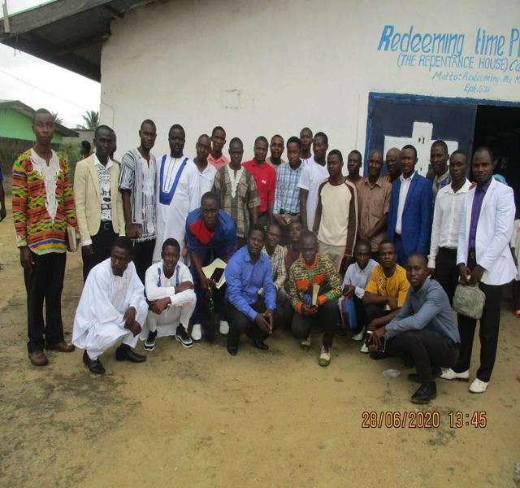
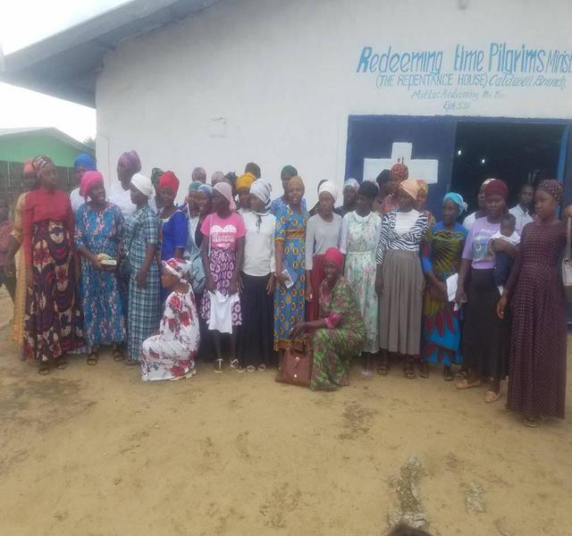
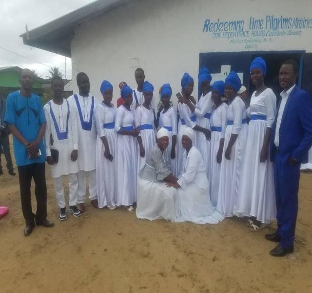

The Men Department
Iron sharpens Iron. Men who minister to other men understand the value of forming relationships that facilitate a real ministry. All it takes is one man to have a passion and vision for reaching men in the ministry. The process of organizing and planning will take time and a dedicated group of men to bring the vision of one man to fruition. Once the men in the church see a ministry totally focused on their issues, challenges and interests, they will buy into the vision and soon provide the additional support that is needed to sustain a strong men’s ministry. The goals and aspirations of our Men's Ministry is to get involved in the active pursuit of men in order to connect them to God, His Word, and other men for the purpose of winning, growing, and training God's man in Christ. We know one thing for sure -- God will use the heart and life of anyone who chooses to make himself available to Him. The Bible says, "Go and make disciples of all nations, baptizing them in the name of the Father and the Son and the Holy Spirit." This is the great commission spoken by Jesus Himself. In other words, Jesus Christ is commissioning His followers to go into the entire world and reproduce believers. This is the big calling.
The Woman Department
In our Women’s ministry, we seek to transform women into mature, productive, joyful daughters of the King of Kings and Lord of Lords. We have a great understanding that for a woman to be transformed, she must have opportunities to see how God can use her. She must also know her gifts and step out in faith expecting God to work through her. And when she does, she experiences profound pleasure and usually surprise from the Almighty God. The feelings we experience when God works through us to teach and minister to women can’t be described — only experienced. God wants every believer to know that joy! God expects leaders to offer multiple opportunities for women to serve.
The Choir Directress
The choir Department
The Choir is one the oldest groups in Church history. It is of the Priesthood, dating back to the Old Testament Worship. It comprises a group of musicians that sing and play musical instruments to lead worship in God’s presence. In the Old Testament, the Choir was usually made up of the Sons of Levi who led worship in the Tabernacle. This rite was their sole obligation – 1 Chr. 15:16, 6:31-35, 2 Chr 7:6. Because music has an eternal function in worship of YAHWEH, the Choir also becomes relevant in the New Testament Church Rev. 5:11, Matt. 26:30, Acts 16:25. In RTPM, the Choir at the local church level is headed by a Choir Directress who may have an Assistant; both reporting to the Minister-in-Charge of the Choir in the Temple. The department usually comprises Lead Vocalists, Backup Singers and Instrumentalists. They are always at liberty to organize themselves and their activities for optimized productivity.
The Children Department
Then some children were brought to Him (Jesus Christ) so that He might lay His hands on them and pray; and the disciples rebuked them. But Jesus said, “Let the children alone, and do not hinder them from coming to Me; for the kingdom of heaven belongs to such as these.” (Matthew 19:13-14) Due to the biblical approach of Jesus Christ, our children department receives an amazing experience, and thus have the opportunity to be influenced by the example of their parents and the congregation. Children are more likely to cherish and delight in the worship of God if they witness that heart for worship in the church. When they see their parents and other adults bow their heads in earnest prayer, or lift their hands in praise, the genuine worship they observe can stir their hearts to worship. Children can observe parents listening intently to the sermon, taking notes and processing the truth they are hearing. They observe this hunger for the Word of God, which can stir the same longing in their own hearts. Learning to sit still in the church service can be difficult for children, but as they begin to listen carefully, they will understand more. Little by little, children will learn about God’s greatness, His love, His holiness, His judgment, and His faithfulness. They will begin to know how He works in the world. Children will hear of His mighty acts and His loving heart for His people. They will begin to understand what Jesus did on the cross and why He did it. Children will learn how much they need to depend on Jesus and how His death on the cross made a way for sinners to be saved.